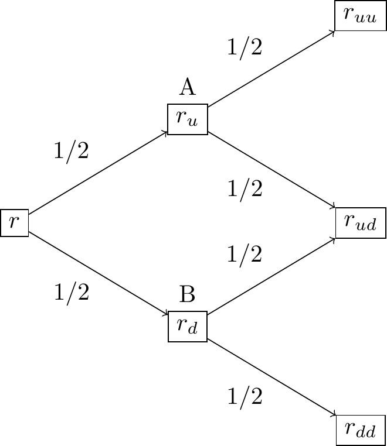

library(linprog)
library(xtable)
library(empfin)
library(nleqslv)## Warning in !is.null(rmarkdown::metadata$output) && rmarkdown::metadata$output
## %in% : 'length(x) = 2 > 1' in coercion to 'logical(1)'In this chapter, we introduce the interest rate model due to F. Black, E. Derman and W. Toy, which was one of the first model to match exactly a zero-coupon curve and a volatility curve of zero-coupon bonds. Modern models such as the Libor Market Model tend to match the forward rates and volatilities, because such data is directly observable in the market for interest rate caps and floors. The Black-Derman-Toy (BDT) model is still worth studying, because it provides a simple framework for understanding how term structure models can be used to price and manage the risk of interest rate derivatives.
The model was originally presented in an algorithmic matter, by presenting its construction in a binomial tree.
The rate \(r(t)\) follows a log-normal process, which, in the past, was considered a desirable feature since it prevents the rate from being negative.
There are two ways of specifying the rate volatility: the original BDT model fits the term structure of volatility of zero-coupon yields, but one can also use the volatility of caps and swaptions, which have the advantage of being directly observable. In this chapter, we follow the original specification of the BDT model. A two-period model is represented below.

The inputs to the model are a zero-coupon curve \(z(t)\) and a volatility curve of zero-coupon yields \(\beta(t)\) (\(\sigma(t)\) is the local volatility at time \(t\)). Considering a zero coupon bond maturing at \(2\Delta t\), its price \(B(0, 2 \Delta t)\) is:
\[\begin{align} B(0, 2 \Delta t) &= \frac{1}{(1+z(2 \Delta t))^2} \\ &= \frac{1}{1+r \Delta t} \left[ \frac{1}{2} \frac{1}{1+r_u \Delta t} + \frac{1}{2} \frac{1}{1+r_d \Delta t} \right] \end{align}\]
Matching the volatility curve provides a second equation. Consider a zero-coupon maturing at \(k\Delta t\), its price at node \(A\) (\(B\)) is \(P_A(k\Delta t)\) (\(P_B(k\Delta t)\)) and the corresponding yield is \(Y_A(k \Delta t)\) (\(Y_B(k\Delta t)\)). The variance of the logarithm of the zero-coupon yield is estimated at the first time step in the tree (omitting the time argument for clarity):
\[\begin{align} V(\ln z(k\Delta t)) &= \frac{1}{2} \left(\ln Y_A\right)^2 + \frac{1}{2} \left(\ln Y_B\right)^2 - \left[ \frac{\ln Y_A + \ln Y_B}{2} \right]^2 \\ &= \left[ \frac{1}{2} (\ln Y_A - \ln Y_B) \right]^2 \\ &= \beta(k \Delta t)^2 (k-1) \Delta t \end{align}\] or,
\[ \ln \left(\frac{Y_A}{Y_B} \right) = 2 \beta(k \Delta t) \sqrt{(k-1) \Delta t} \] For a zero coupon bond maturing in two time steps, we have \(Y_A = r_u\) and \(Y_B = r_d\), so that we have a system of two equations to determine \(r_u\) and \(r_d\):
\[\begin{align} \ln(\frac{r_u}{r_d}) &= 2 \sigma(2\Delta t) \sqrt{ \Delta t} \tag{24.1}\\ \frac{1}{(1+z(2 \Delta t))^2} &= \frac{1}{1+r \Delta t} \left[ \frac{1}{2} \frac{1}{1+r_u \Delta t} + \frac{1}{2} \frac{1}{1+r_d \Delta t} \right] \tag{24.2} \end{align}\] The other time slices are solved in a similar fashion. The process is illustrated by a simple example where we construct a 5-steps tree, with annual increments that matches the market data summarized in the table.
We start by solving equations (24.1) and (24.2) for \(r_u\) and \(r_d\).
The solution is \(r_u = 0.143\) and \(r_d = 0.098\). Using the fact that the local volatility is constant in a time slice, we have:
\[ \ln \left(\frac{r_{uu}}{r_{du}} \right) = \ln \left(\frac{r_{du}}{r_{dd}} \right) = \alpha \] so that, irrespective of the number of nodes in a time slice, we need to solve a system of two non linear equations with unknowns \(r_0\) (the short rate for the lowest node) and \(\alpha\).
We obtain the following values for the short rates in the second time slice: